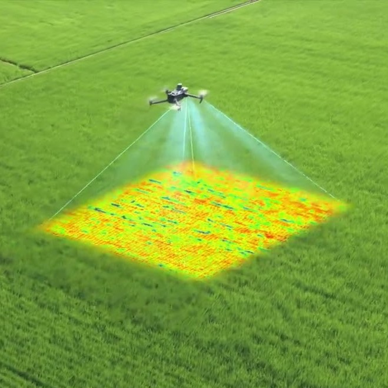
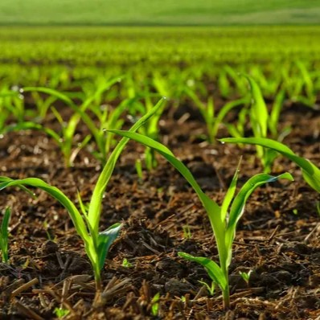
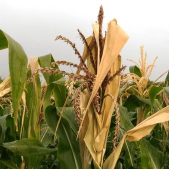
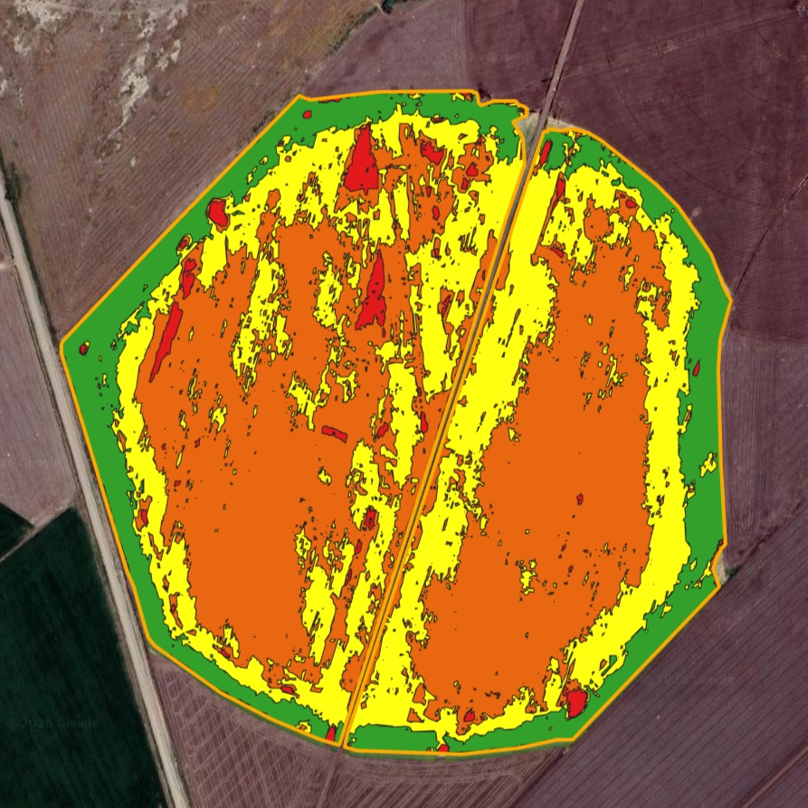
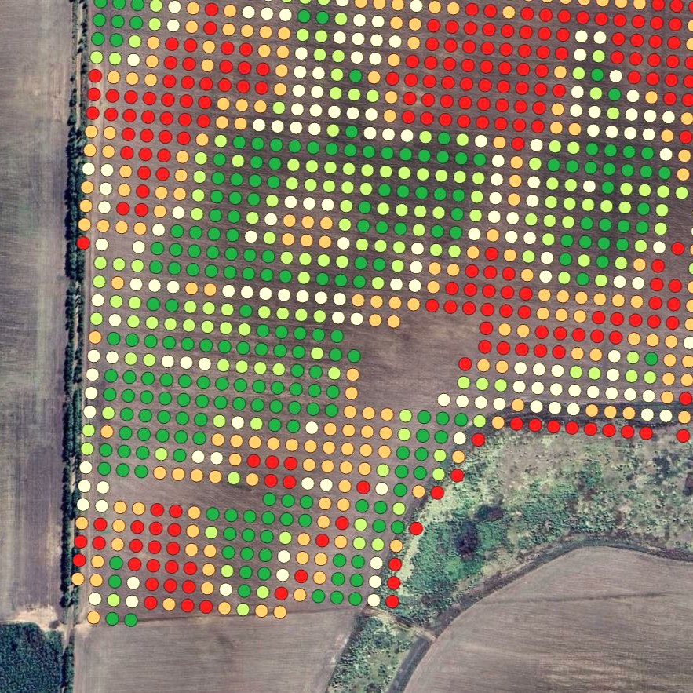
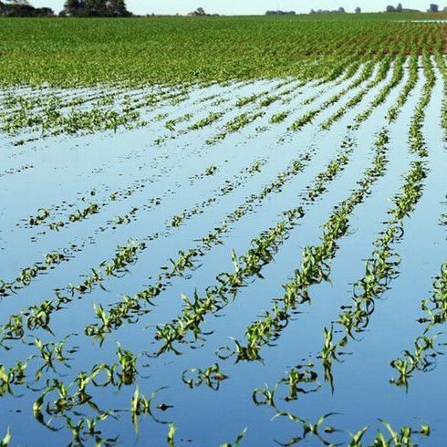
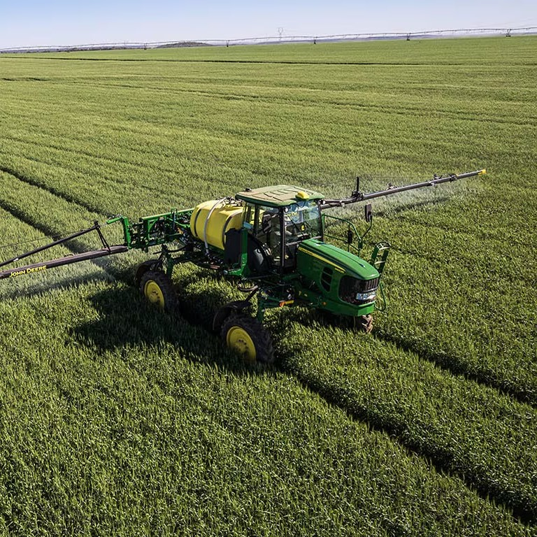
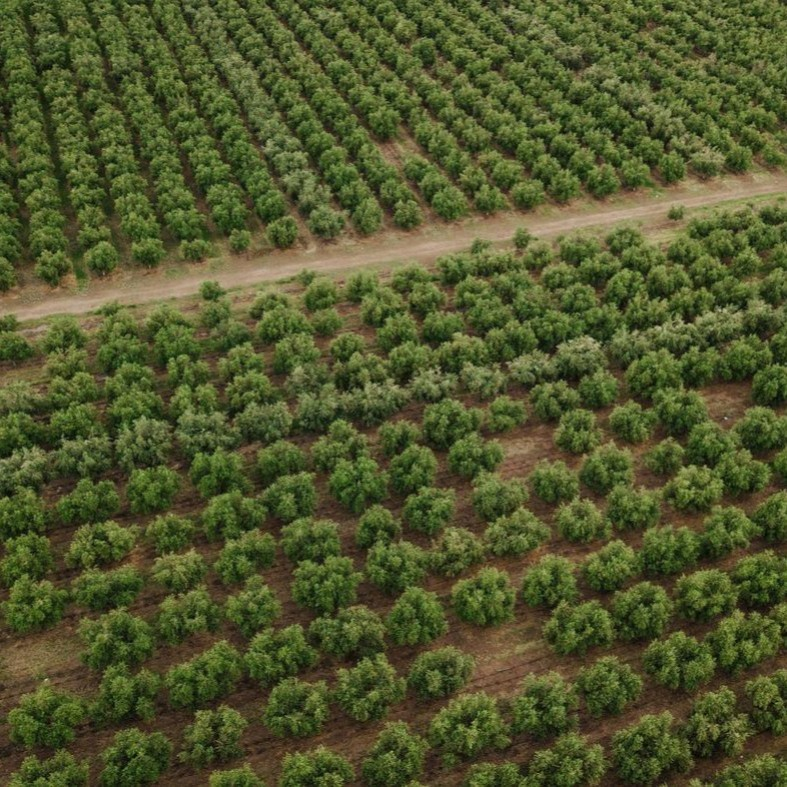
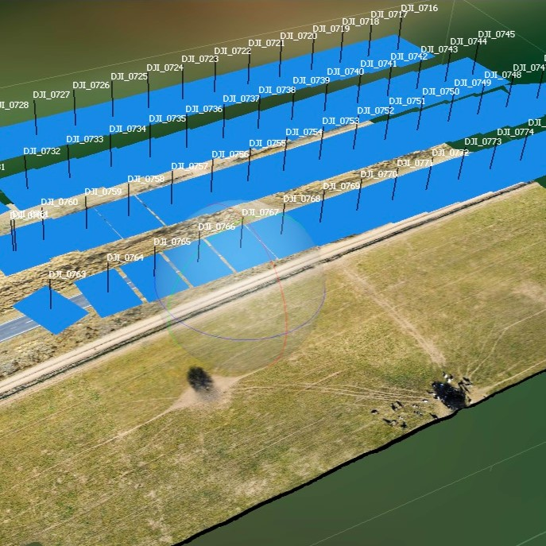
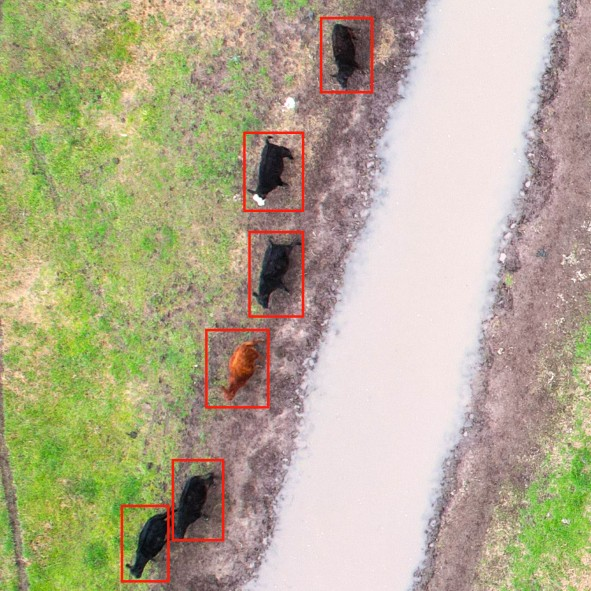

Soluciones precisas para la gestión inteligente de cultivos y recursos agropecuarios.
Desde la adquisición de imágenes hasta el análisis avanzado, cubrimos todo el flujo de trabajo de la agricultura de precisión.










Herramientas web pensadas para que aproveches al máximo tu DJI Mavic 3M, desde la planificación del vuelo hasta la elección del índice espectral correcto.
Estimá baterías, tiempo, GSD, footprint y costo de procesamiento para tu próximo relevamiento. Cargá la superficie y los parámetros, y obtené todos los cálculos al instante.
Qué índice espectral usar, cuándo y para qué cultivo. Filtrá por cultivo o etapa fenológica, o encontrá el índice ideal según el problema agronómico que querés resolver.
Catálogo de 18 malezas resistentes y tolerantes según REM 2025, calendario de mapeo por cultivo y calculadora de ahorro por aplicación sitio-específica.
Transformar el sector agropecuario mediante la integración de tecnologías avanzadas: imágenes satelitales, drones y análisis de datos. Proporcionamos soluciones precisas y sostenibles para la gestión de cultivos, optimizando recursos y mejorando la productividad.
Un futuro en el que cada productor agropecuario acceda a información precisa y oportuna, maximizando rendimientos y minimizando el impacto ambiental, contribuyendo a la seguridad alimentaria global.
Innovación · adoptamos las últimas tecnologías.
Calidad · resultados precisos y confiables.
Sostenibilidad · cuidado del medio ambiente.
Colaboración · soluciones personalizadas.
Integridad · transparencia y ética.
Cada campo y cada cultivo es único. Nos esforzamos por ofrecer soluciones adaptadas a las necesidades específicas de cada productor, usando colaboración y tecnología de vanguardia.
Ingeniero Agrónomo
Especialista en Teledetección y Sistemas de Información Geográfica
Licenciado en Ciencias Aplicadas
Estamos disponibles para responder tus preguntas y ayudarte a encontrar la solución que tu campo necesita.